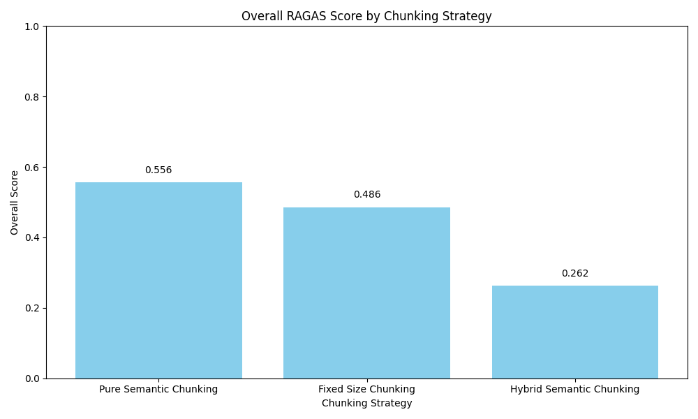
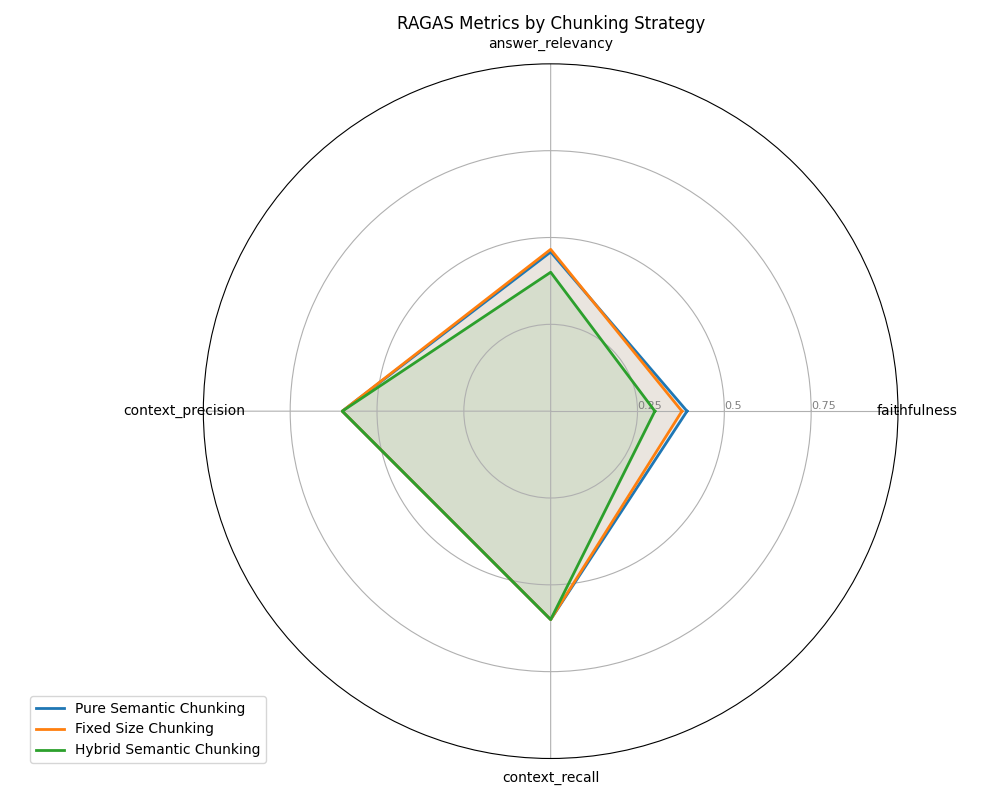
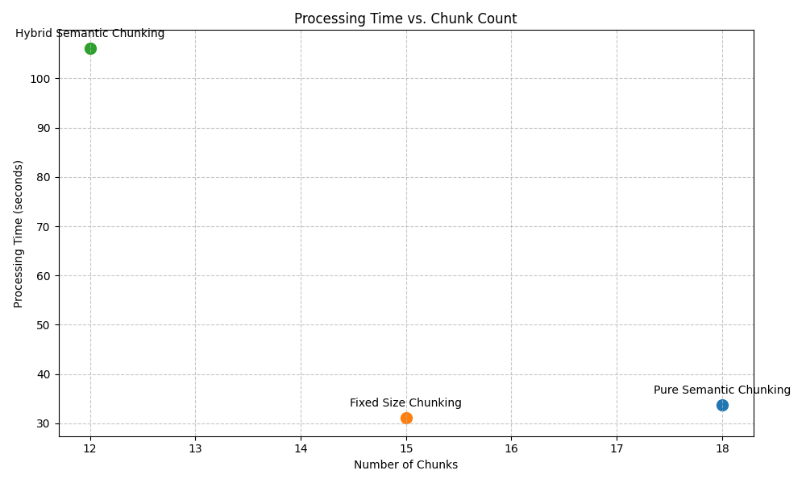

Chunking Strategy Comparison
PR #246149 - 2025-05-28 10:25:16
Comparison Table
| Strategy |
Overall Score |
Faithfulness |
Answer Relevancy |
Context Precision |
Context Recall |
Chunks |
Time (s) |
| Pure Semantic Chunking |
0.556 |
0.393 |
0.458 |
0.600 |
0.600 |
18 |
33.74 |
| Fixed Size Chunking |
0.486 |
0.378 |
0.466 |
0.600 |
0.600 |
15 |
31.14 |
| Hybrid Semantic Chunking |
0.262 |
0.300 |
0.400 |
0.600 |
0.600 |
12 |
106.08 |
Overall Scores

RAGAS Metrics Comparison

Processing Time vs. Chunk Count

Recommendations
Based on RAGAS metrics evaluation, Pure Semantic Chunking
is the best chunking strategy for PR #246149 with an overall score of
0.556.
Strategy-specific observations:
- Semantic Chunking: Preserves natural boundaries in code, good for well-structured PRs.
- Hybrid Chunking: Balances structure with size, versatile for mixed content PRs.
- Fixed Size Chunking: Provides consistent sizing, simple and predictable.
- Hierarchical Chunking: Maintains context hierarchies, good for complex nested structures.